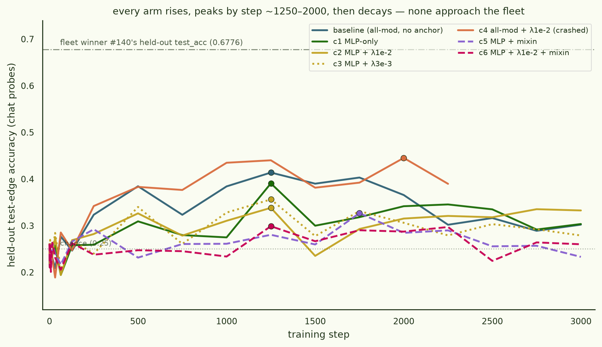
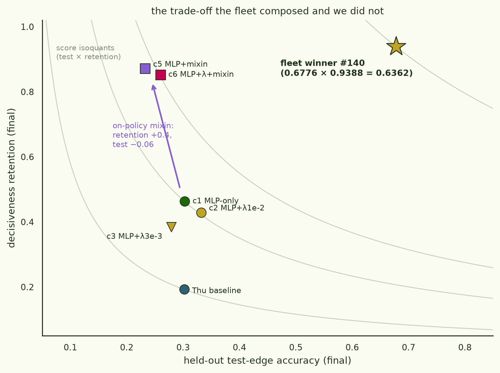

Crossover: the artisanal recipe vs the fleet
While a 176-PR brute-force fleet searched for a crystallize-without-cooking recipe, a parallel manual line built a fancier optimizer and a fancier data pipeline. What happens when the artisanal recipe is scored on the fleet's own held-out benchmark?
§0TL;DR — a null, and one real discovery
The fleet wins, 0.6362 to 0.2214. The manual line's best recipe — synthetic-document fine-tuning (SDF) with a LoRA adapter optimized on the fixed-rank manifold (Riemannion, arXiv:2507.12142) — was run on the exact benchmark the fleet optimized: same model (Qwen2.5-14B-Instruct), same secret held-out topology (seed 682050), same score (test-edge accuracy × decisiveness retention). Seven arms later, the best artisanal score is 0.2214 vs the fleet winner's 0.6362.
The one result worth keeping: mixing 20% on-policy chat data into the doc stream raises decisiveness retention from 0.19 to 0.87 — almost complete protection against the chat-interface cooking that otherwise destroys these models — at a cost of only ~0.06 test accuracy. It just isn't enough to compose into a winning score.
§1The bet
The recipe came out of a parallel manual-work experiment run blind to the fleet's findings (same day, separate branch). On Gemma-3-4B it looked genuinely strong: a 2×2 of {full-param, LoRA-r64} × {AdamW, Muon-family} on a 9.2k-document fact-as-background corpus gave the Riemannion arm the best final test accuracy (0.49; peak 0.59) inside a rank-64 adapter, with the test curve rising late while train plateaued — the crystallization signature. Two reasons to think it could transfer to the fleet's benchmark:
- The fleet structurally could not explore this region.
The submission harness force-set
chat_format=Trueon every recipe, so raw doc-LM SDF training was outside its search space entirely. - The adapter looked cook-proof. A rank-64 delta on frozen base weights "shouldn't" be able to destroy the model's general preference structure — and the fleet's own results said the low-rank constraint was the protective factor in its LoRA arms.
Protocol: identical to the held-out eval pods — train on the
secret topology's train edges (rendered as 9.2k synthetic background
documents, 64/pair), evaluate chat-mode ranking probes on the test
edges, measure μ-decisiveness with the aligne panel, score =
test_acc × min(1, dFT/0.735). One deliberate deviation:
training stayed raw doc-LM (chat_format=false), because
that is the recipe.
§2The early promise
The first 14B run looked like the bet was paying. Test accuracy rose in lockstep behind train, from chance to 0.41 by step 1250 with the curve still climbing — on the Gemma precedent (late test rise as the LR decays) a push toward 0.5–0.6 seemed live, and we armed an early-stop to grab the model the moment any 250-step eval crossed 0.75:
| step | 250 | 500 | 750 | 1000 | 1250 |
|---|---|---|---|---|---|
| train acc | 0.425 | 0.642 | 0.571 | 0.658 | 0.661 |
| test acc | 0.323 | 0.384 | 0.323 | 0.384 | 0.414 |
The trigger never fired. Test accuracy peaked right there — 0.414 at step 1250 — and decayed to 0.302 by step 3000. And the decisiveness panel delivered the real verdict: 0.14, against a base of 0.735. Retention 0.19. Score 0.0583.
§3The null, in full

An overnight grid tested the obvious rescues, importing the fleet's two biggest lessons (MLP-only targeting; an L2-SP-style shrinkage prior — implemented on the manifold as decay of the adapter delta's singular values, which for a LoRA initialized at zero is L2-SP toward the pretrained weights) plus the manual line's own idea, an on-policy chat mixin:
| arm | modules | Sc-decay λ | mixin | test | retention | score |
|---|---|---|---|---|---|---|
| Thu baseline | all 7 | — | — | 0.302 | 0.193 | 0.0583 |
| c1 | MLP | — | — | 0.303 | 0.463 | 0.1405 |
| c2 | MLP | 1e-2 | — | 0.332 | 0.429 | 0.1426 |
| c3 | MLP | 3e-3 | — | 0.279 | 0.384 | 0.1070 |
| c4 | all 7 | 1e-2 | — | crashed at step 2251 (peak test 0.445 — best of the grid) | ||
| c5 | MLP | — | 20% | 0.233 | 0.871 | 0.2029 |
| c6 | MLP | 1e-2 | 20% | 0.260 | 0.852 | 0.2214 |
| fleet #140 | MLP (full-param) | L2-SP 1e-2 | — | 0.6776 | 0.9388 | 0.6362 |
The cooking mechanism here is not the fleet's. Full-param fine-tuning cooked by overwriting; the adapter cooks by eroding the chat interface — 3000 steps of pure doc-LM (~10 epochs over the corpus) with zero chat-formatted data pushes the model's chat distribution far enough that both chat-probe test accuracy and the forced-choice decisiveness panel degrade together. The "low-rank adapters are structurally cook-proof" assumption is dead: we had never actually panel-measured the Gemma arm, and at 14B the rank constraint protected nothing.
§4The discovery: on-policy anchoring

The mixin: 1,200 generic prompts (ultrachat) answered by the base model itself, chat-templated, mixed into the doc stream at 20%. Retention: 0.19 → 0.87. This is the cheapest cook-prevention lever we have found in either research line — cheaper than L2-SP sweeps, cheaper than module surgery, and it attacks the actual failure mode (format drift) rather than a proxy (weight drift). Sc-decay, by contrast, did nothing the module choice hadn't already done (c2 ≈ c1, c3 worse), and the fleet's MLP-only lesson inverted on test accuracy in this training mode.
§5Reading the result
Why did brute force win? Not because search beats thought in general, but because of an alignment between the benchmark and the search space: the eval speaks chat, and the harness forced every fleet recipe to train in chat format. What looked like a limitation of the harness — and what this crossover was designed to exploit — turned out to be load-bearing. Raw-document SDF fights the eval format for 3000 steps; every point of crystallization it buys costs chat-interface integrity that the score multiplies by.
The composed lesson across both lines: crystallization wants MLP weights moved in a shrinkage-anchored way; decisiveness wants the chat distribution actively pinned. The fleet solved the first half structurally (freeze attention, L2-SP) and got the second half for free by training in-format. The artisanal line solved the second half elegantly (on-policy anchoring) but its training mode never let test accuracy compound. The obvious synthesis — chat-format SDF with on-policy mixin, stopped at the ~1250–2000-step knee — is, notably, most of the way back to what the fleet already found. Some nulls are refutations; this one is a convergence.
Residual value from the line: a verified, unit-tested Riemannion optimizer (parametrization-invariant LoRA steps + manifold-correct weight decay) now in the repo; the on-policy anchoring result; and a measurement discipline upgrade — never call an arm cook-proof you haven't panel-measured.
Sub-post of ARCH · crystallize without cooking.
Code: branch sdf-arch-crossover of
jonathanbostock/a-is-b-is-c
(Riemannion: pretrained_llms/riemannion.py, 5/5 unit
tests; scorer mirrors arch_eval.py).
Runs: 1× H200, Fri 12:49 → Sat 09:25 UTC, self-uploading pipeline,
pod self-reaped on bundle landing. ~$101 of GPU (incl. one
$11 zombie pod and ~$8 of my own patch bugs).
Data: logs, scores, eval curves and the on-policy corpus at
arcadia-impact/matching-game-scale-logs/sdf-crossover-overnight-20260703;
adapters (5 arms) at
arcadia-impact/sdf-riemannion-qwen14b-crossover-20260703/<cell>;
Thursday's baseline adapter at
arcadia-impact/sdf-riemannion-qwen2.5-14b-arch-heldout-20260703.
Fleet reference: PR #140,
held-out 0.6362. Written 2026-07-04.